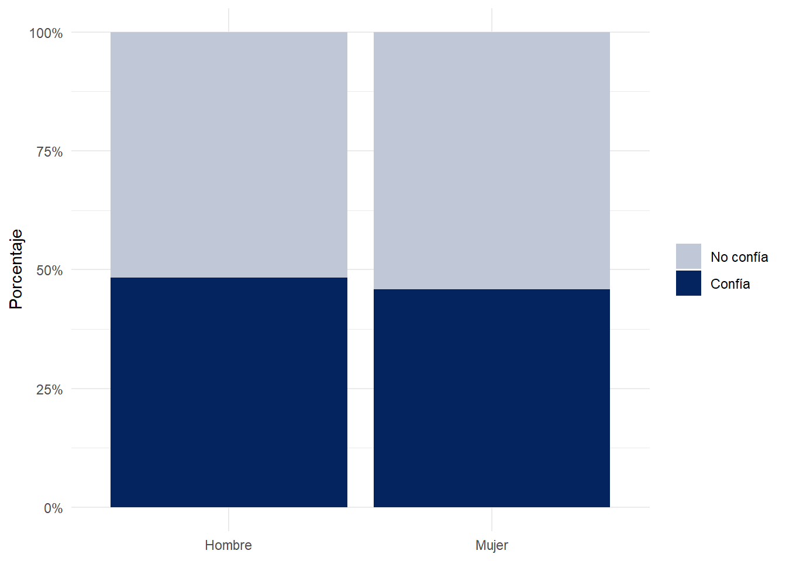
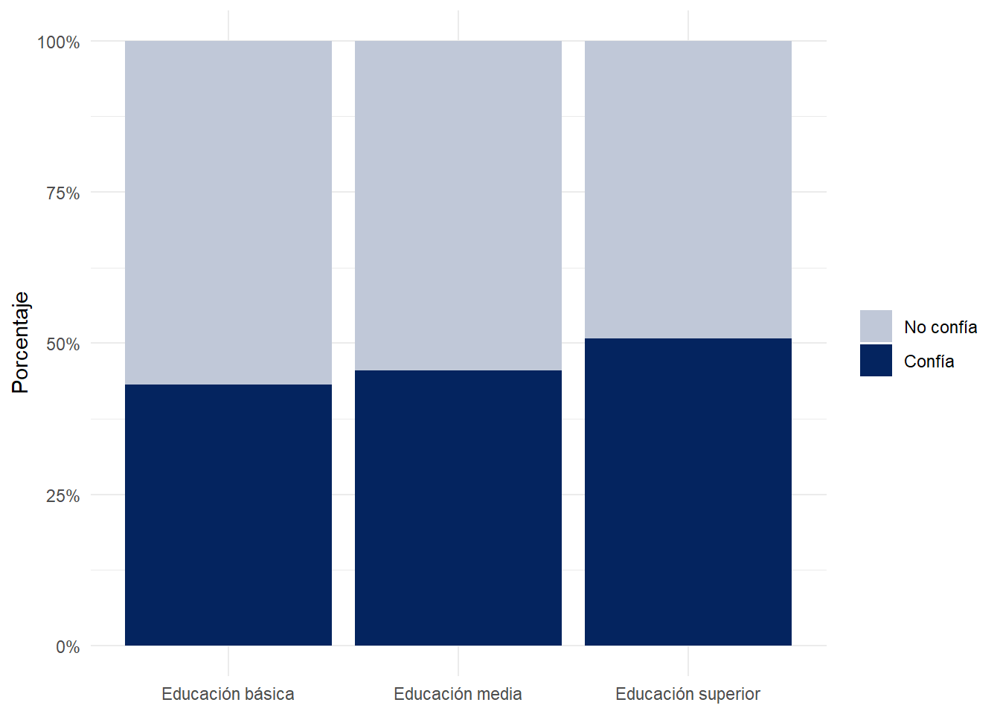

pacman::p_load(dplyr,
sjmisc,
sjPlot,
summarytools,
kableExtra,
ggplot2)Práctico 09. Regresión logística I: odds, odds ratio y coeficientes logit
Métodos estadísticos para Ciencias Sociales III
1 Presentación
1.1 Objetivo de la práctica
La semana pasada introdujimos con el ejemplo del Titanic los conceptos centrales de la regresión logística: probabilidades, chances (u odds) y razón de chances (u odds ratio). En esta guía los repasaremos con datos de ELSOC, la base del curso, y daremos el paso siguiente: estimar el modelo con la función glm y comprobar que sus coeficientes reproducen lo que calculamos a mano.
Al terminar, usted debería ser capaz de:
- Calcular e interpretar una probabilidad, un odds y un odds ratio a partir de una tabla de contingencia
- Comprender por qué los odds se transforman en logit
- Estimar una regresión logística con
glme interpretar sus coeficientes en logit y en odds ratio
2 Librerías
rm(list = ls())
options(scipen = 999)
st_options(bootstrap.css = FALSE,
plain.ascii = FALSE,
style = "rmarkdown",
dfSummary.silent = TRUE,
footnote = NA,
subtitle.emphasis = FALSE)3 Datos
load(url("https://github.com/Kevin-carrasco/metod3-unab/raw/refs/heads/main/files/data/elsoc16-22.RData"))proc_data <- elsoc_long_2016_2022.2 %>%
filter(ola == 1) %>%
select(t01, m01, m0_sexo, m0_edad) %>%
set_na(., na = c(-999, -888, -777, -666)) %>%
rename("confianza" = t01,
"educacion" = m01,
"sexo" = m0_sexo,
"edad" = m0_edad) %>%
na.omit()
nrow(proc_data)[1] 29063.1 La variable dependiente
Trabajaremos con la confianza en los vecinos, medida en una escala de 1 a 5. La convertiremos en una variable dicotómica: confía quien responde 4 o 5, y no confía quien responde 1, 2 o 3.
frq(proc_data$confianza)x <numeric>
# total N=2906 valid N=2906 mean=3.20 sd=1.20
Value | N | Raw % | Valid % | Cum. %
--------------------------------------
1 | 332 | 11.42 | 11.42 | 11.42
2 | 502 | 17.27 | 17.27 | 28.70
3 | 711 | 24.47 | 24.47 | 53.17
4 | 987 | 33.96 | 33.96 | 87.13
5 | 374 | 12.87 | 12.87 | 100.00
<NA> | 0 | 0.00 | <NA> | <NA>proc_data <- proc_data %>%
mutate(confia = ifelse(confianza >= 4, 1, 0),
confia = factor(confia,
levels = c(0, 1),
labels = c("No confía", "Confía")),
sexo_f = factor(sexo,
levels = c(1, 2),
labels = c("Hombre", "Mujer")),
educ_rec = case_when(educacion <= 3 ~ 1,
educacion <= 5 ~ 2,
TRUE ~ 3),
educ_f = factor(educ_rec,
levels = c(1, 2, 3),
labels = c("Educación básica",
"Educación media",
"Educación superior")))
AdvertenciaDicotomizar tiene un costo
Al convertir una variable de cinco categorías en una de dos, perdemos información: alguien que responde 1 y alguien que responde 3 quedan en el mismo grupo. En una investigación, el punto de corte debe justificarse teóricamente, y conviene revisar si los resultados cambian al moverlo.
4 Probabilidades y odds
4.1 Probabilidades
Una probabilidad es la posibilidad de ocurrencia de un evento, usando como referencia todos los casos.
frq(proc_data$confia)x <categorical>
# total N=2906 valid N=2906 mean=1.47 sd=0.50
Value | N | Raw % | Valid % | Cum. %
-------------------------------------------
No confía | 1545 | 53.17 | 53.17 | 53.17
Confía | 1361 | 46.83 | 46.83 | 100.00
<NA> | 0 | 0.00 | <NA> | <NA>\[P_{confiar} = \frac{1361}{2906} = 0.468\]
Un 46,8% de las personas confía en sus vecinos. La probabilidad varía siempre entre 0 y 1, y la del evento y la de su complemento suman 1.
4.2 Odds
Los odds (chances) comparan las ocurrencias con las no ocurrencias:
\[Odds = \frac{p}{1-p}\]
\[Odds_{confiar} = \frac{1361}{1545} = \frac{0.468}{0.532} = 0.88\]
Hay 0,88 personas que confían por cada persona que no confía; o, en otros términos, 88 que confían por cada 100 que no confían.
ImportantePropiedades de los odds
- Odds menores que 1: el evento es menos probable que su complemento
- Odds mayores que 1: el evento es más probable que su complemento
- Odds igual a 1: ambos resultados son igualmente probables
- A diferencia de una probabilidad, un odds no tiene techo: varía entre 0 e infinito
4.3 Odds por grupo
Cross-Tabulation, Row Proportions
sexo_f * confiaData Frame: proc_data
| confia | ||||||||||||
|---|---|---|---|---|---|---|---|---|---|---|---|---|
| sexo_f | No confía | Confía | Total | |||||||||
| Hombre | 598 | ( | 51.6% | ) | 560 | ( | 48.4% | ) | 1158 | ( | 100.0% | ) |
| Mujer | 947 | ( | 54.2% | ) | 801 | ( | 45.8% | ) | 1748 | ( | 100.0% | ) |
| Total | 1545 | ( | 53.2% | ) | 1361 | ( | 46.8% | ) | 2906 | ( | 100.0% | ) |
Un gráfico de barras apiladas al 100% permite comparar las proporciones de cada grupo:
ggplot(proc_data, aes(x = sexo_f, fill = confia)) +
geom_bar(position = "fill") +
scale_y_continuous(labels = scales::percent) +
scale_fill_manual(values = c("#c0c8d8", "#04245f")) +
labs(x = NULL, y = "Porcentaje", fill = NULL) +
theme_minimal()
addmargins(table(proc_data$confia, proc_data$sexo_f))
Hombre Mujer Sum
No confía 598 947 1545
Confía 560 801 1361
Sum 1158 1748 2906\[Odds_{hombres} = \frac{560}{598} = 0.936\]
\[Odds_{mujeres} = \frac{801}{947} = 0.846\]
tabla <- table(proc_data$confia, proc_data$sexo_f)
odds_h <- tabla["Confía", "Hombre"] / tabla["No confía", "Hombre"]
odds_m <- tabla["Confía", "Mujer"] / tabla["No confía", "Mujer"]
c(hombres = odds_h, mujeres = odds_m) hombres mujeres
0.9364548 0.8458289 En ambos grupos el odds es menor que 1: hay algo más de chances de no confiar que de confiar.
NotaProbabilidad y odds no son lo mismo
La probabilidad de que un hombre confíe en sus vecinos es 0,484. Su odds es 0,936. Ambos describen el mismo hecho en escalas distintas: la probabilidad compara a quienes confían con el total, y el odds los compara con quienes no confían.
5 Odds ratio
5.1 Sexo
¿Cuántas más (o menos) chances de confiar en sus vecinos tienen las mujeres respecto de los hombres? La respuesta es la razón de chances u odds ratio:
\[OR = \frac{Odds_{mujeres}}{Odds_{hombres}} = \frac{0.846}{0.936} = 0.90\]
odds_m / odds_h[1] 0.9032245Las chances de confiar en los vecinos de las mujeres son 0,90 veces las de los hombres.
ImportanteCómo leer un odds ratio
- \(OR = 1\): no hay asociación
- \(OR > 1\): el grupo comparado tiene más chances que el de referencia
- \(OR < 1\): el grupo comparado tiene menos chances que el de referencia
El OR depende de cuál grupo se ponga en el denominador. Si invertimos la comparación, obtenemos el mismo hallazgo expresado al revés:
odds_h / odds_m[1] 1.1071445.2 El odds ratio como cambio porcentual
Una forma práctica de leer un OR es como cambio porcentual en las chances: \((OR - 1) \times 100\).
(odds_m / odds_h - 1) * 100[1] -9.677553Las chances de confiar de las mujeres son un 9,7% menores que las de los hombres. Es una asociación débil, como suele ocurrir en investigación social.
AdvertenciaChances no son probabilidades
Un OR de 0,90 significa que las chances son un 10% menores, no que la probabilidad sea un 10% menor. Es el error más frecuente al interpretar estos resultados.
5.3 Una variable de tres categorías
ggplot(proc_data, aes(x = educ_f, fill = confia)) +
geom_bar(position = "fill") +
scale_y_continuous(labels = scales::percent) +
scale_fill_manual(values = c("#c0c8d8", "#04245f")) +
labs(x = NULL, y = "Porcentaje", fill = NULL) +
theme_minimal()
tabla_educ <- table(proc_data$confia, proc_data$educ_f)
tabla_educ
Educación básica Educación media Educación superior
No confía 371 676 498
Confía 282 565 514odds_educ <- tabla_educ["Confía", ] / tabla_educ["No confía", ]
round(odds_educ, 3) Educación básica Educación media Educación superior
0.760 0.836 1.032 Los odds aumentan con el nivel educacional, y en educación superior superan levemente el 1. Calculemos los odds ratio tomando la educación básica como categoría de referencia:
round(odds_educ / odds_educ["Educación básica"], 3) Educación básica Educación media Educación superior
1.000 1.100 1.358 Las chances de confiar en los vecinos de quienes tienen educación superior son 1,36 veces las de quienes tienen educación básica, es decir, un 36% mayores.
NotaLa conexión con las variables dummy
Hay una categoría de referencia, y cada OR se interpreta respecto de ella. Es la misma lógica que seguirá el modelo de regresión logística.
5.3.1 Ejercicio
Calcule el odds ratio entre educación superior y educación media. ¿Cómo se interpreta?
Ver solución
odds_educ["Educación superior"] / odds_educ["Educación media"]Educación superior
1.234901 6 Del odds al logit
Los odds no son simétricos: las chances favorables van de 1 a infinito, mientras que las desfavorables quedan comprimidas entre 0 y 1. La solución es aplicar el logaritmo natural, que da origen al logit:
\[logit = \ln\left(\frac{p}{1-p}\right)\]
round(log(odds_educ), 3) Educación básica Educación media Educación superior
-0.274 -0.179 0.032 Los logits negativos corresponden a odds menores que 1 (educación básica y media), y el logit positivo, a un odds mayor que 1 (educación superior). Un logit de 0 indicaría chances iguales.
Para ver la relación entre las tres escalas, calculemos el odds y el logit de un conjunto de probabilidades:
escalas <- data.frame(prob = c(0.05, 0.1, 0.2, 0.3, 0.4, 0.5,
0.6, 0.7, 0.8, 0.9, 0.95))
escalas$odds <- escalas$prob / (1 - escalas$prob)
escalas$logit <- log(escalas$odds)
kable(escalas, digits = 3,
col.names = c("Probabilidad", "Odds", "Logit")) %>%
kable_styling(full_width = FALSE) %>%
row_spec(6, bold = TRUE, background = "#dbe8ff")| Probabilidad | Odds | Logit |
|---|---|---|
| 0.05 | 0.053 | -2.944 |
| 0.10 | 0.111 | -2.197 |
| 0.20 | 0.250 | -1.386 |
| 0.30 | 0.429 | -0.847 |
| 0.40 | 0.667 | -0.405 |
| 0.50 | 1.000 | 0.000 |
| 0.60 | 1.500 | 0.405 |
| 0.70 | 2.333 | 0.847 |
| 0.80 | 4.000 | 1.386 |
| 0.90 | 9.000 | 2.197 |
| 0.95 | 19.000 | 2.944 |
NotaLas tres escalas
| Escala | Rango | Sin asociación |
|---|---|---|
| Probabilidad | 0 a 1 | |
| Odds | 0 a infinito | OR = 1 |
| Logit | −infinito a +infinito | \(\beta\) = 0 |
El modelo trabaja en la escala del logit porque es la única no acotada, y por tanto la única compatible con una ecuación lineal. La interpretación, en cambio, suele hacerse volviendo a los odds o a las probabilidades.
7 Estimación de la regresión logística
7.1 La función glm
La regresión logística se estima con la función glm. Su sintaxis es la misma que la de lm, con el argumento adicional family = "binomial", que indica que la dependiente es dicotómica:
modelo <- glm(dependiente ~ independiente1 + independiente2,
data = datos,
family = "binomial")Cuando la dependiente es un factor de dos categorías, R modela la probabilidad de la segunda categoría:
levels(proc_data$confia)[1] "No confía" "Confía" En este caso, el modelo estimará las chances de confiar.
7.2 Modelo con nivel educacional
m_educ <- glm(confia ~ educ_f,
data = proc_data,
family = "binomial")Con transform = NULL, tab_model muestra los coeficientes en logit:
tab_model(m_educ,
transform = NULL,
show.se = TRUE,
show.ci = FALSE,
show.r2 = FALSE,
digits = 3,
dv.labels = "Confianza en vecinos",
pred.labels = c("(Intercepto)", "Educación media", "Educación superior"),
string.pred = "Predictores",
string.est = "Logit")| Confianza en vecinos | |||
|---|---|---|---|
| Predictores | Logit | std. Error | p |
| (Intercepto) | -0.274 | 0.079 | 0.001 |
| Educación media | 0.095 | 0.097 | 0.330 |
| Educación superior | 0.306 | 0.101 | 0.002 |
| Observations | 2906 | ||
7.3 Interpretación de los coeficientes logit
Del coeficiente logit podemos leer directamente dos cosas:
- El signo: ambos coeficientes son positivos, por lo que quienes tienen educación media o superior tienen más chances de confiar que quienes tienen educación básica
- La significación: la diferencia entre educación superior y básica es estadísticamente significativa (\(p<0,01\)); la diferencia entre educación media y básica no lo es
Lo que no podemos leer directamente es la magnitud, porque nadie razona en “logaritmos de chances”.
Tip¿De dónde salen estos números?
Compare con los logits que calculamos a mano en la sección anterior. El intercepto (−0,274) es el logit de educación básica, la categoría de referencia. El coeficiente de educación superior (0,306) es la diferencia entre el logit de educación superior y el de educación básica: \(0.032 - (-0.274) = 0.306\).
7.4 De logits a odds ratio
Para interpretar la magnitud, volvemos a la escala de los odds con la exponenciación, que es la operación inversa del logaritmo:
\[e^{logit} = Odds\]
exp(coef(m_educ)) (Intercept) educ_fEducación media educ_fEducación superior
0.7601078 1.0995793 1.3578712
ImportanteEl resultado clave
Los coeficientes exponenciados son exactamente los odds ratio que calculamos a mano: 1,10 para educación media y 1,36 para educación superior. Y el intercepto exponenciado, 0,760, es el odds de confiar de quienes tienen educación básica.
El modelo no hace nada distinto de lo que hicimos a mano: lo hace de forma automática, con inferencia estadística, y permitiendo incorporar varios predictores a la vez.
Por defecto, tab_model muestra los coeficientes ya exponenciados:
tab_model(m_educ,
show.ci = TRUE,
show.r2 = FALSE,
digits = 3,
dv.labels = "Confianza en vecinos",
pred.labels = c("(Intercepto)", "Educación media", "Educación superior"),
string.pred = "Predictores",
string.est = "OR",
string.ci = "IC 95%")| Confianza en vecinos | |||
|---|---|---|---|
| Predictores | OR | IC 95% | p |
| (Intercepto) | 0.760 | 0.000 – Inf | 0.001 |
| Educación media | 1.100 | 0.000 – Inf | 0.330 |
| Educación superior | 1.358 | 0.000 – Inf | 0.002 |
| Observations | 2906 | ||
NotaSignificación en odds ratio
En logit, la ausencia de asociación corresponde a un coeficiente igual a 0. En odds ratio corresponde a 1, porque \(e^0 = 1\). Por eso, un OR es estadísticamente significativo cuando su intervalo de confianza no incluye el 1. Observe que el intervalo de educación media incluye el 1, y el de educación superior no.
7.5 Ejercicio: modelo con sexo
Estime un modelo de regresión logística con sexo_f como predictor y compruebe que el OR coincide con el que calculamos a mano. ¿Es estadísticamente significativo?
Ver solución
m_sexo <- glm(confia ~ sexo_f,
data = proc_data,
family = "binomial")
tab_model(m_sexo,
show.ci = TRUE,
show.r2 = FALSE,
digits = 3,
pred.labels = c("(Intercepto)", "Sexo (Mujer)"),
string.est = "OR",
string.ci = "IC 95%")| confia | |||
|---|---|---|---|
| Predictors | OR | IC 95% | p |
| (Intercepto) | 0.936 | 0.000 – Inf | 0.264 |
| Sexo (Mujer) | 0.903 | 0.000 – Inf | 0.180 |
| Observations | 2906 | ||
El OR de mujer es 0,90, igual al calculado a mano. Su intervalo de confianza incluye el 1, por lo que la diferencia entre hombres y mujeres no es estadísticamente significativa.
7.6 Una independiente continua
Con una independiente continua, el OR indica cuánto se multiplican las chances por cada unidad adicional en \(x\):
m_edad <- glm(confia ~ edad,
data = proc_data,
family = "binomial")
exp(coef(m_edad))(Intercept) edad
0.4060399 1.0168998 Por cada año adicional de edad, las chances de confiar en los vecinos se multiplican por 1,017, es decir, aumentan un 1,7%. Para un cambio de 10 años:
exp(10 * coef(m_edad)["edad"]) edad
1.182446 Las chances de confiar de una persona de 50 años son 1,18 veces las de una de 40.
8 Lo que viene
Hasta aquí estimamos modelos con un solo predictor, y en todos los casos el OR del modelo reprodujo el de la tabla de contingencia.
Lo que aún no hemos hecho es controlar estadísticamente. Acabamos de ver que la edad se asocia con la confianza. Si quienes tienen educación básica son, en promedio, mayores que quienes tienen educación superior, ¿cambiará el efecto de la educación al controlar por edad? Eso, junto con las probabilidades predichas y el ajuste del modelo, es el contenido del próximo práctico.
9 Ejercicios
9.1 Conceptos
Un odds ratio de 0,45, ¿indica una asociación positiva o negativa? ¿Cómo se expresaría ese mismo resultado invirtiendo la comparación? Expréselo también como cambio porcentual.
Un coeficiente logit de −0,7, ¿indica una asociación positiva o negativa? ¿Qué odds ratio le corresponde?
9.2 Membresía en organizaciones vecinales
La variable c12_01 de ELSOC registra la membresía en una junta de vecinos u otra organización vecinal (1 = No es miembro, 2 = Miembro inactivo, 3 = Miembro activo).
Con la ola 1 de ELSOC, construya una variable dicotómica que distinga entre quienes son miembros (activos o inactivos) y quienes no lo son.
Elabore la tabla de contingencia entre esa variable y el nivel educacional recodificado en tres categorías.
Calcule a mano la probabilidad y el odds de ser miembro para cada nivel educacional, y los odds ratio respecto de la educación básica.
Estime el mismo análisis con
glm. Compruebe que los OR coinciden con los calculados a mano, e indique cuáles diferencias son estadísticamente significativas.Estime un modelo con la edad como predictor e interprete su OR para un año y para 10 años.